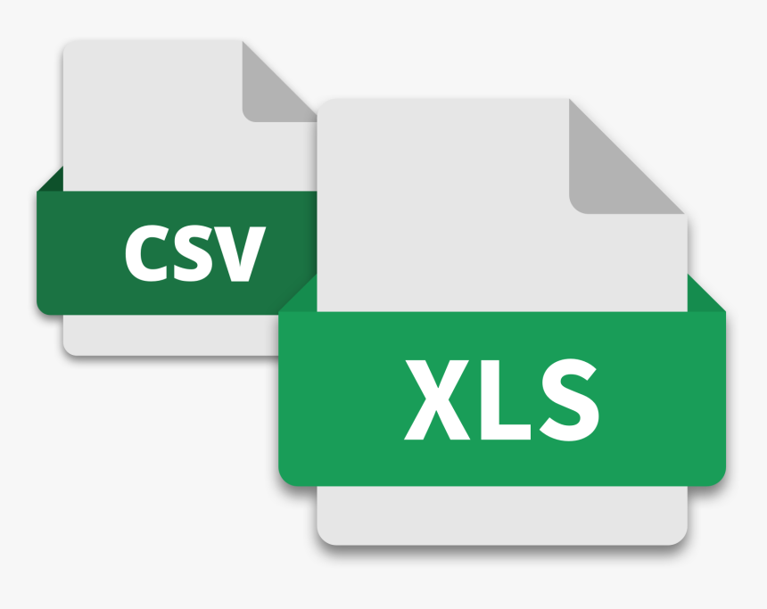

在编程中一般不适用excel，而是用一种很像excel的csv来存储数据。而且Excel软件可以打开csv的。
一、csv存储数据代码步骤
说明:代码看不懂没关系，能背过最好。背不过也没关系，能理解代码功能，而且亲自上手调试过，调试正常无误的代码可以加入你的代码笔记本中，然后以后需要的时候复制粘贴修改参数即可
1. 1 新建一个csv文件
import csv
path = 'data/test.csv'
csvf = open(path, 'a+', encoding='utf-8', newline='')
1.2 定义字段名，并初始化csv文件为writer
fieldnames = ['name', 'age']
writer = csv.DictWriter(csvf, fieldnames=fieldnames)
writer.writeheader()
1.3 将待存储数据整理为字典格式
test_data = {'name': 'David',
'age': 25}
1.4 用writer往csv中存储数据
writer.writerow(test_data)
1.5 最后记得关闭csv文件
csvf.close()
import csv
csvf = open('data/test1.csv', 'a+', encoding='utf-8', newline='')
fieldnames = ['name', 'age']
writer = csv.DictWriter(csvf, fieldnames=fieldnames)
writer.writeheader()
csvf.close()
import csv
csvf = open('data/test2.csv', 'a+', encoding='utf-8', newline='')
fieldnames = ['name', 'age']
writer = csv.DictWriter(csvf, fieldnames=fieldnames)
writer.writeheader()
test_data = {'name': 'David',
'age': 25}
writer.writerow(test_data)
csvf.close()
二、很多数据的存储
如果很多数据存储时，就可以用之前学到的for循环。
datas = [{'name': 'David', 'age': 25},
{'name': 'Mary', 'age': 30},
{'name': 'Henry', 'age': 35}]
datas
[{'name': 'David', 'age': 25},
{'name': 'Mary', 'age': 30},
{'name': 'Henry', 'age': 35}]
import csv
csvf = open('data/test2.csv', 'a+', encoding='utf-8', newline='')
fieldnames = ['name', 'age']
writer = csv.DictWriter(csvf, fieldnames=fieldnames)
writer.writeheader()
for data in datas:
writer.writerow(data)
csvf.close()